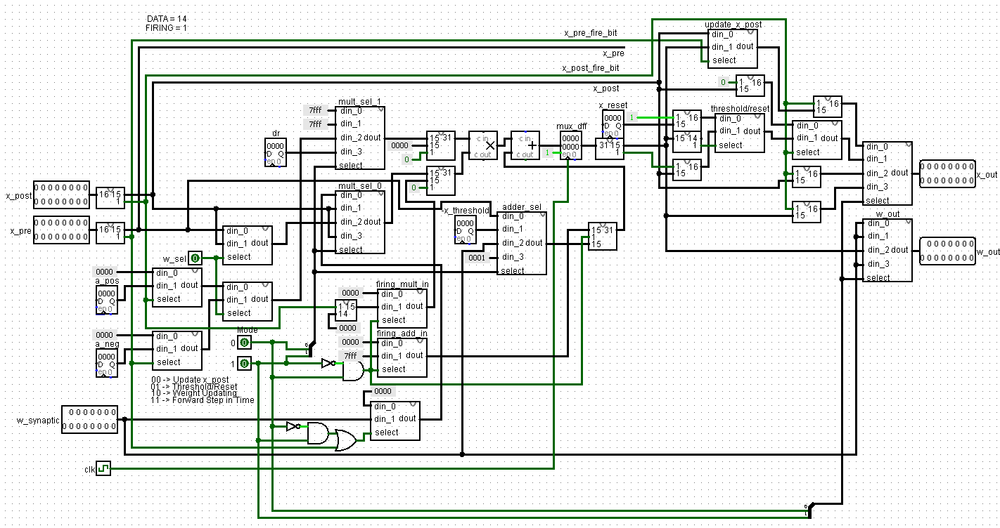
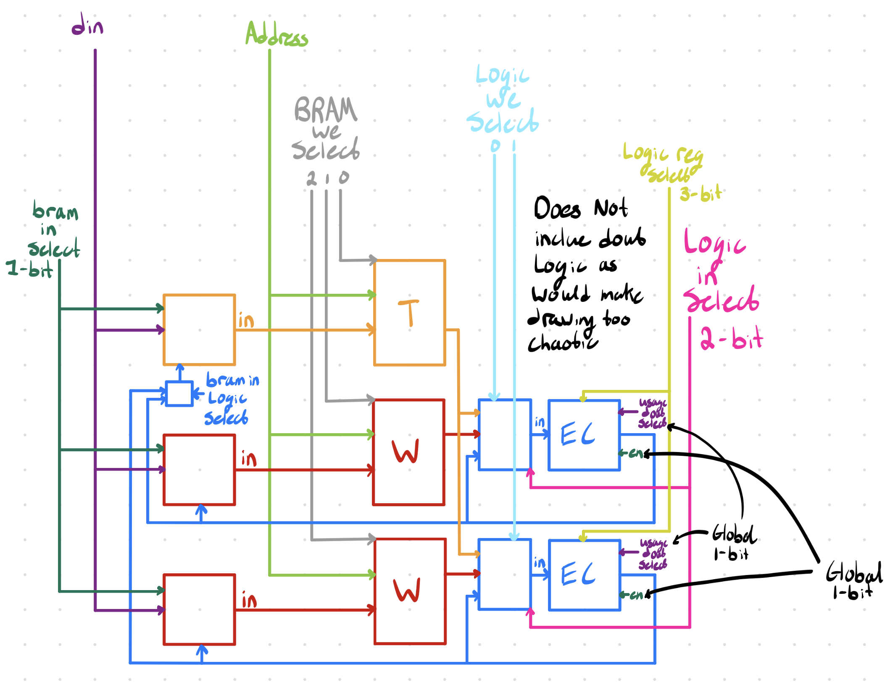

A summary of the things I have done at the University of Waterloo's ASIC design team
View on GitHub ↗Digital
During my 3rd co-op term (right after 2A) I decided to join UW ASIC. The digital team was building a 10G ethernet parser. I decided to join but first had to complete a digital team onboarding. The project was a
After reading through the papers and going deep into the textbooks I decided to apply the knowledge I had learnt to an accelerator. I had made a team of myself and two other people (Melika M. & Ron Kazachkov) and after reading a few papers we decided to implement Unsupervised learning of digit recognition using spike-timing-dependent plasticity. The paper used the MNIST dataset to train a SNN unsupervised. We decided to modify the neuron dynamics to make hardware implementation easier (this turned out to be a mistake). Below are the 4 equations outlining our models
Where X is a 16-bit neuron value with the first 15 bits being 1Q14 (Xdata) and the most significant bit is the firing bit (Xfiring) which is a 0 if the neuron didn't just fire and a 1 if the neuron did just fire. Xpost is a postsynaptic neuron and Xpre is a presynaptic neuron. W is a 15-bit (1Q14) weight value representing a synaptic "weight". The other values (Xthreshold, Xreset, A+, A-, decay_rate) are model presets.
I build a logic block (seen below) in verilog to describe the behaviour of these equations. I wanted to use only 1 DSP slice per logic block to maximize the number of logic blocks as the board I was planning on using (a Zync 7020 SoC) had 220 DSP slices.

Once I had made a logic block that worked I used it in a scaleable architecture (shown below). I designed the architecture around the knowledge that the Zync 7020 SoC has 35 BRAM slics (once configured). The idea was to stored all the neuron values in 1-3 BRAM slices and use the rest of the 34-32 BRAM slices for storing weight values.

After implementing the architecture in verilog I wrote a python (cocotb) apparatus for testing and running models on the network. Sadly though after completing all this work one of the members of the team told me that the neuron equations we picked did not work well for the MNIST data set. The best accuracy we acheived was 85%. Because of this I am not going to implement the much larger SNN model in my apparatus as it would require more code which is not worth if for a model that I know doesn't work.
Reflection
talk about -how I used many luts to use only one dsp slice which probably was a bad idea -this is not a neuromorphic computer, it's an accelerator, my next version will be a neuromorphic computer -too many control signals and bad naming